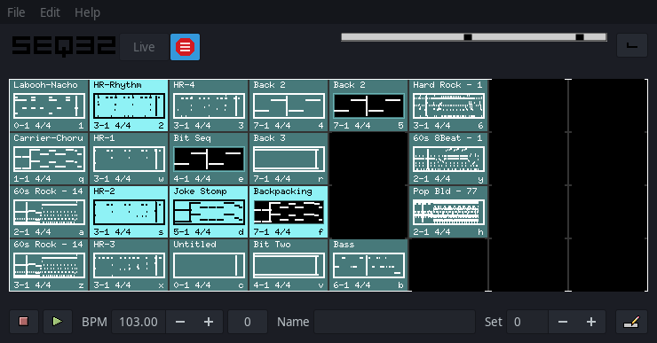
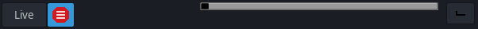
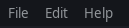
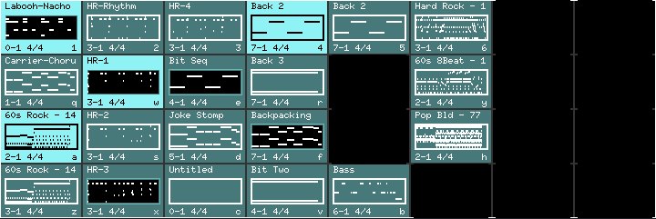
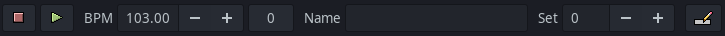

Top Bar

- Live button will toggle between live and song mode. When in Live mode the main window boxes determine what will be played.
When in Song mode, the [6] Song Editor Window will determine what is played.
- Stop Menu button will toggle the main menu access on/off when the sequencer is NOT running. This is beneficial
when queuing sequences for start during live performance as some of the default keybinding may conflict with the menu keybinding
(for example CTRL + Q).
- Timer will show the sequencer timing while playing.
- L Mute Group Learn button. Click L button then press a mute group key to store the mute state of
the sequences in that key. (see File/Options/Keyboard for available mute group keys and the corresponding
hotkey for the L button).

File menu
- New: Create a new seq32 project file. Seq32 supports standard (.MIDI/.midi/.MID/.mid) type 1 files.
- Open: Open an existing seq32 (.MIDI/.midi/.MID/.mid) file.
- Recent Files: Display/select recent (.MIDI/.midi/.MID/.mid) files that were loaded or created.
- Open Playlist: Select a playlist file (see [9] Playlist Mode).
- Save: Save the current seq32 file loaded. If no current file is loaded then the same as Save as...
- Save as...: Save the current project to a given new seq32 file.
- Options: Open the options window (see [4] Options Window).
- Exit: Quit the program. If there are changes, you will be prompted to save/cancel.
Edit menu
- SongEditor: Opens the [6] Song Editor Window.
- Apply song transpose: This will make any transposed sequences on a sequence that indicated Transposable be shifted in
the [5] Sequence Editor Window by the transpose amount as indicated on the [6] Song Editor Window.
- Mute all tracks: Will mute all used tracks on the [6] Song Editor Window.
- Unmute all tracks: Will unmute all tracks on the [6] Song Editor Window.
- Toggle mute all tracks: Will toggle mute all tracks on the [6] Song Editor Window.
-
Import MIDI: Import any SMF type 1 MIDI file into the current project. This will append the imported file to existing projects. It will not overwrite tracks.
-
Midi export song: Export the [6] Song Editor Window as a type 1 MIDI file. This will combine all triggers and sequences on a track for standard MIDI type 1 format.
Help
- About: Shows the About box.
- User Manual: Show this help manual window.
Boxes

-
The main Seq32 window is where you manage loop “sequences” (boxes),
screen sets, tempo, and live performance controls.
- Each sequence (box) represents a loop.
-
Right-click an empty box to open a menu to create a new loop or edit an existing one.
-
Left-click a box toggles its state from muted (dark blue) to playing (light blue)
when the sequencer is running.
- Click and hold the left button on a sequence to drag it to a new grid location.
- Dragging onto an existing sequence swaps locations.
- Dragging with Alt held to an inactive location copies to the landing location.
-
Right-clicking an active sequence opens its options menu with additional menu items:
- Edit will open the [5] Sequence Editor Window for the current sequence.
- Cut will delete the current sequence and copy it to the clipboard for later paste.
- Copy will copy the current sequence to the clipboard for later paste.
- Export Sequence will launch the file browser to allow exporting the current sequence to a MIDI file.
- Export Track will launch the file browser to allow exporting the entire [6] Song Editor Window
triggers as a MIDI file for the current selected box.
- Song will open show a sub menu for editing the [6] Song Editor Window with one additional item.
- Midi Bus will show sub menus for selecting the MIDI bus and channel for sequence output or recording.
Muting and Unmuting sequences
- Left-clicking a sequence toggles its playing status.
- Pressing its assigned keyboard key also toggles its status.
- Default Keyboard mapping for the active screen set:
[1 ][2 ][3 ][4 ][5 ][6 ][7 ][8 ]
[q ][w ][e ][r ][t ][y ][u ][i ]
[a ][s ][d ][f ][g ][h ][j ][k ]
[z ][x ][c ][v ][b ][n ][m ][, ]
Mute/Unmute patterns (Groups)
-
Toggle the playing status of up to 32 previously defined mute/unmute patterns (groups)
in the active screen set, similar to hardware sequencers.
-
This can be done using a “group toggle” key or via a MIDI controller, both assigned
in the [7] User Configuration File (.seq32rc).
-
A group is stored by holding a “group learn” key while pressing the corresponding
“group toggle” key.
- Keys also exist to enable/disable group functionality.
Replace
-
Holding Left Ctrl while selecting a sequence mutes all other sequences and turns on
the selected sequence.
Restore
-
Holding Alt saves the current state of playing sequences and restores them when
Alt is released.
-
Holding Left Ctrl + Alt allows briefly switching to new sequences, then flipping
back upon releasing Alt.
Queue
-
Holding Right Ctrl queues an on/off toggle for a sequence when the loop ends.
-
Queue also works for groups; in that case each sequence toggles after the individual loop ends.
Keep queue
Bottom Bar

- Stop and Start the sequencer.
- BPM:
- Set the current tempo by typing or using the spinner.
- Use the F9 key for tap tempo or using the 0 tap button.
- The
; and ' keys can also be used to increase/decrease tempo.
- Name: The current screen set name can be entered and displayed.
- Set: Shows the current active screen set number.
- Screen Sets
- You only see 32 loops in the main window. This is a screen set.
- Switch between sets using the
[ and ] keys
or the spin widget labeled set.
- There are 32 sets, for a total of 1024 loops.
- Song Editor button will launch the [6] Song Editor Window.